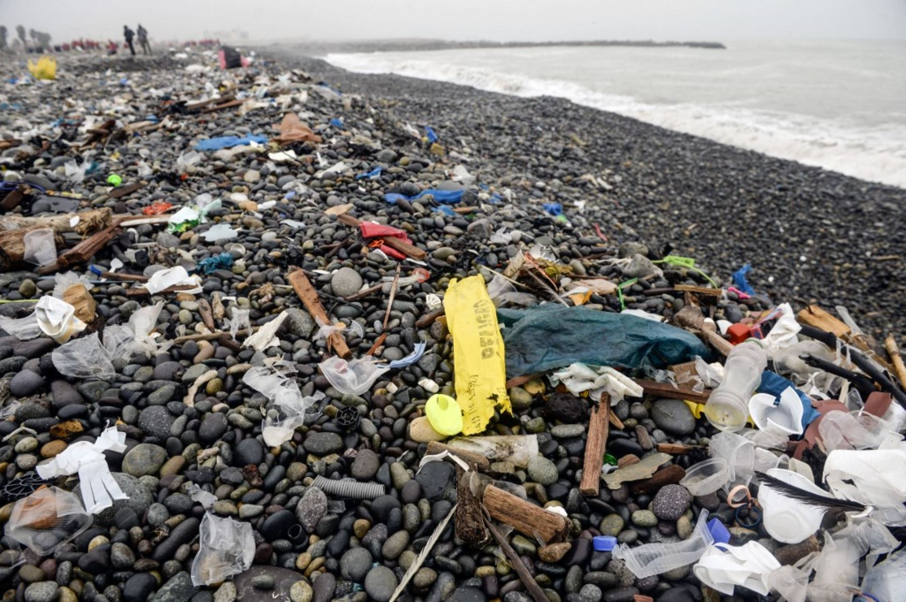

La industrialización y los avances en gran diversidad de campos han llevado al enorme progreso de los países desarrollados en la actualidad. Sin embargo, además de facilitarnos nuestra vida cotidiana, estos desarrollos producen variadas clases de contaminación que afectan gravemente al medio ambiente, provocando lo que comúnmente se conoce como contaminación ambiental.
Así, muchas de las actividades humanas que se llevan a cabo a diario y que conllevan el uso de sustancias nocivas para el medio ambiente, como los gases contaminantes, dañan el entorno natural, aceleran el cambio climático y amenazan la integridad del planeta y de las especies que lo habitan.

| ant | sig | menu |